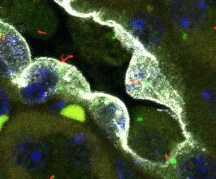
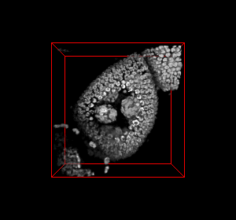

Sundaresh Ram — Research
Medical Imaging
Segmentation and Registration of the Lamina Cribrosa Microstructure
 |
Glaucoma is a group of neurodegenerative eye diseases characterized by gradual deterioration of retinal ganglion cells. Lamina cribrosa, a connective mesh-like trabecular tissue through which the retinal ganglion cells pass, is a potential location to identify the galucomatous condition of the eye. Therefore characterizing the biomechanics of the lamina cribrosa is essential for understanding the mechanisms leading to vision loss in glaucoma. In this project we have developed an automated system, where we use multiscale curvilinear structure enhancement and graph-cuts optimization to segment the mesh-like lamina cribrosa, and spectral graph theory-based approach to register the lamina cribrosa across different pressures. |
Detecion, Segmentation, and Classification of Primary Cilia
|  | Primary cilia are membrane-enclosed finger-like projections found on the surface of many eukaryotic cells in the human body. They play an important role in key process of cell development and physiology, by acting as a transducer of pathway and modulating their length. Therefore, dynamic quantitative measurement of ciliary length is needed to show the nature of primary cilia in human health and disease. In this research work, we have developed an automated system, that uses mathematical morphology and wavelet multiresolution techniques to detect and segment all the cilia in microscopy images, multiple sparse representations for the classification of primary cilia, and graph-based techniques for the automatic length calculation of the primary cilia. |
Detection, Segmentation, and Classification of Nuclear and Sub-Nuclear Structures
|  | Understanding the 3-D spatial organization of genes and other genetic elements within the cell nucleus is important for regulating the gene expression level. The biologists are interested in quantitative methods for studying nuclear organization and sub-nuclear gene distribution. They currently lack high-throughput methods for quantitative global analysis of 3-D gene organization. The aim of this project is to build an automated system capable of detection, segmentation and classification of 3-D nucleus and the sub-nuclear 3-D spots obtained from microscopy image data. more |